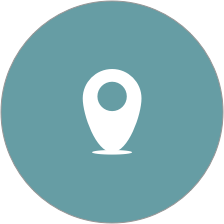
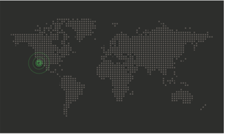

What is Talos?
Talos is a security centric OS that runs on your Android device.
Location Based

If Talos detects suspicious behavior, Talos will disable security-sensitive applications.
Intelligent
Talos monitors your location activity to detect suspicious behavior.
Secure
Talos uses state of the art 128 bit encyption to store your Talos credentials.
Made with <3 in San Francisco


James

Nick

Rohan